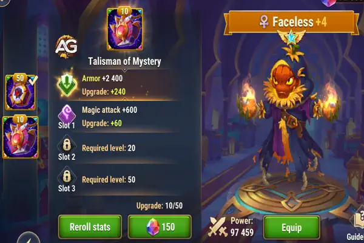

Discover the best strategies for Faceless in Hero Wars Alliance. Learn about his talismans, including the Talisman of Perseverance and Talisman of Mystery, to maximize his performance in PvP and Hydra battles.
Unveiling Faceless: Hero Overview and Overall Tier List
Main Attributes
Position:
Backline
Role:
Mage, Control
Primary Stat:
Intelligence
Faction:
Eternity
How to obtain:
Events, Heroic Chest, Outland Shop
Tier List 2025
Hero Overall Tier List:
S
Hydra Tier List:
S
Illustration of Faceless, a character from the game Hero Wars Alliance, developed by Nexters.
Unraveling the Enigma: Mastering Faceless in Hero Wars
In the dynamic universe of Hero Wars, where strategic depth reigns supreme, few heroes command as much intrigue and versatility as Faceless. A master of adaptation, Faceless possesses abilities that seamlessly integrate into any team composition, confounding adversaries and turning the tide of battle with unparalleled finesse. In this comprehensive guide, we delve into the intricacies of utilizing Faceless effectively, exploring his unique skill set and strategic synergies to empower players in their quest for victory.
Doppelganger: The Art of Mimicry
At the heart of Faceless's arsenal lies the enigmatic ability to mimic the skills of both allies and foes alike, making him an unpredictable force to be reckoned with on the battlefield. With Doppelganger, Faceless assumes the guise of the last hero to use their first skill, unleashing a replicated version of that ability with formidable potency. What sets Doppelganger apart is its adaptability, allowing Faceless to dynamically respond to shifting combat scenarios and exploit the strengths of opposing teams. However, it's crucial to note that certain skills are immune to replication, adding an element of strategy to the decision-making process.
Power Throw: Shifting the Balance of Power
In addition to his mimicry prowess, Faceless boasts formidable crowd control capabilities, epitomized by his devastating Power Throw ability. With a swift motion, Faceless raises the nearest enemy aloft before hurling them into the heart of the enemy formation, stunning all foes within range for a crucial two seconds. Not only does Power Throw deal significant damage, but it also disrupts enemy formations, creating openings for allied assaults and turning the tide of battle in an instant. Strategic deployment of Power Throw is essential, capitalizing on its disruptive potential to control the flow of combat and dictate the pace of engagements.
Chain Lightning: Arcane Arsenal
No master strategist would be complete without an array of debilitating spells at their disposal, and Faceless is no exception. With Chain Lightning, Faceless unleashes a barrage of magical projectiles that ricochet between enemies, dealing damage and lowering their physical attack for a duration. This dual-purpose ability not only inflicts considerable harm upon adversaries but also weakens their offensive capabilities, tipping the scales of battle decisively in favor of Faceless and his allies. When used in conjunction with his other abilities, Chain Lightning becomes a potent tool for exerting control over the battlefield and dismantling enemy defenses with surgical precision.
Spell Expert: Shield of the Arcane
Rounding out Faceless's formidable skill set is Spell Expert, a passive ability that fortifies the magical defenses of his entire team. Through his arcane expertise, Faceless imbues his allies with heightened resistance to magical assaults, bolstering their survivability and resilience against enemy spellcasters. This defensive boon is invaluable in prolonged engagements, providing a crucial buffer against incoming magical attacks and ensuring the longevity of Faceless's allies on the battlefield.
Synergies and Strategic Considerations
While Faceless is a formidable force in his own right, his true potential is unleashed when paired with synergistic allies who complement his abilities and amplify his impact on the battlefield. One such pairing that has garnered considerable attention is with the fearsome K'arkh, whose devastating damage output synergizes seamlessly with Faceless's skill replication capabilities. By synchronizing their abilities, such as Faceless copying K'arkh's Power Throw while K'arkh executes Deadly Tendrils, players can unleash devastating combinations that obliterate enemy formations and secure victory with ruthless efficiency.
Understanding Faceless
At the heart of Faceless's utility lies his signature ability to copy skills from enemy heroes, making him a wildcard capable of turning the tide of battle in an instant. This innate unpredictability poses a significant challenge for adversaries, as they must constantly reassess their approach in the face of shifting threats. Furthermore, Faceless possesses crowd control capabilities, with the ability to stun enemies and diminish their physical attacks. Additionally, his presence bolsters the magical defenses of allies, making him a valuable asset in countering opposing magic-heavy teams.
Analysis of Faceless's Talismans in Hero Wars Alliance
Faceless is a versatile hero, and his talismans significantly impact his performance in various battle scenarios. Here, we will analyze the two key talismans: the Talisman of Perseverance and the Talisman of Mystery, focusing on their attributes, benefits, and ideal use cases.
Talisman of Perseverance
Attributes:
Intelligence: +2000 (which translates to +6000 Magic Attack, +2000 Magic Defense and +2000 Physical Attack )
Health: +165,000 (split into three reroll slots of +55,000 each)
Faceless with Talisman of Perseverance, Hero Wars Alliance.
Analysis:
The Talisman of Perseverance provides a balanced boost to Faceless's key stats, enhancing his survivability and magical damage output. The increase in Intelligence results in a significant boost to his Magic Attack, allowing Faceless to deal more damage with his abilities. Additionally, the added Magic Defense helps him withstand incoming magical attacks, making him more durable against magic-based teams.
The substantial health increase of +165,000 further solidifies Faceless's role as a resilient hero, capable of enduring prolonged battles. This makes him particularly effective in PvP scenarios such as arena battles and guild wars, where both magic and physical damage are prevalent. The combination of enhanced damage, defense, and health ensures that Faceless can outlast opponents while dealing consistent damage.
However, in battles against the Hydra, this talisman may lead to a slight reduction in overall performance. The increased Magic Defense means that Faceless takes less damage from the Hydra's magical attacks, which in turn could result in fewer activations of his ultimate ability and artifacts. This might slightly reduce his damage output in such battles, where frequent ability usage is key.
Talisman of Mystery
Attributes:
Armor: +12000
Magic Attack: +19800 (split into three reroll slots of +6600 each)

Faceless with Talisman of Mystery, Hero Wars Alliance.
Analysis:
The Talisman of Mystery shifts the focus towards physical defense and pure offensive power. The added Armor significantly improves Faceless's ability to withstand physical attacks, making him more resilient against teams that rely on physical damage. Meanwhile, the +6000 Magic Attack enhances his damage output, benefiting his abilities that scale with Magic Attack.
This talisman is particularly effective in scenarios where Faceless faces teams that are heavy on physical damage. The added Armor allows him to absorb more hits, while the Magic Attack boost ensures that he can retaliate with potent magic-based abilities. However, it’s important to note that only two of Faceless's abilities benefit directly from the increased Magic Attack provided by this talisman. Thus, while it increases his damage potential, its overall impact is more situational compared to the Talisman of Perseverance.
In PvP and general battles, the Talisman of Mystery can be highly effective against specific matchups but may not offer the same level of versatility as the Talisman of Perseverance. Additionally, this talisman can be advantageous when battling the Hydra, as the Armor increase offers protection against physical attacks from the Hydra, and the Magic Attack boost can help maintain high damage output.
Faceless Talisman Summary
Talisman of Perseverance: This is the more versatile and well-rounded talisman, ideal for PvP battles, arena fights, and guild wars. It enhances Faceless’s damage, durability, and overall survivability against both magical and physical threats, making it the superior choice for most scenarios.
Talisman of Mystery: While more specialized, this talisman excels in situations where Faceless faces physical damage-heavy teams. It boosts his Armor and Magic Attack, making him stronger against physical opponents and improving his performance in specific battles, such as against the Hydra.
In summary, the Talisman of Perseverance is generally the better choice for most players, offering consistent performance across a wide range of battles. The Talisman of Mystery, on the other hand, is a more niche option, providing targeted benefits that can be crucial in certain matchups, particularly when physical defense is a priority.
Faceless Hero Wars Positive and Negative Points
Faceless Positive Points
Copies the first skill of enemies and allies
Stun multiple enemies at once
Reduces enemies' physical attack for 4s
3000 magic defense buff to all allies
Faceless Negative Points
Low physical attack to copy agility enemies
Low physical defense
Stats Evolution Priority
Glyphs Priority
Faceless Glyphs Priority
Glyphs
1st
Health
2nd
Magic Penetration
3rd
Magic Attack
4th
Intelligence
5th
Physical Attack
Faceless Artifacts Priority
In Faceless artifacts prioritize Intelligence, for each point of intelligence, he gains 3 points of magic attack, 1 point of magic defense, and 1 point of physical attack.
Then, if you decide to use Faceless on teams of Satori or other mages, prioritize the weapon to give more magic penetration, if you are going to use Eternity teams with Keira and Dante, prioritize the book to gain more magic attack and magic penetration.
Priority
Artifacts
1st
Ring
2nd
Weapon (Magic Penetration)
3rd
Book
Faceless Skins Priority
Priority
Skins
1st
Health
2nd
Magic Penetration (Super)
3rd
Magic Attack
4th
Intelligence
5th
Magical Defense
Faceless with Demonic skin, Hero Wars Alliance.
Faceless vs Hydra
Faceless is on the meta team for Hydra in Hero Wars Alliance and can deal a lot of damage, and now with the talisman he will receive more intelligence and health stats, being able to considerably increase the damage on hydras.
When incorporating Faceless into your team composition, it's crucial to capitalize on his skill-copying prowess while leveraging synergies with other heroes. One notable pairing is with the formidable K'arkh, whose devastating damage output synergizes exceptionally well with Faceless's ability to mimic his skills. By coordinating their abilities, such as Faceless copying K'arkh's Power Throw while K'arkh executes Deadly Tendrils, players can unleash devastating combinations that decimate enemy lines. This synergy highlights the importance of strategic coordination and timing in maximizing Faceless's potential within your team.
Faceless Best Teams
Team Number
Heroes
1
Aidan, Faceless, Mushy, Kayla, Julius
2
Aidan, Faceless, Mushy, Kayla, Cleaver
3
Aidan, Faceless, Cascade, Morrigan, Mushy
4
Aidan, Faceless, Cascade, Mojo, Mushy
5
Aidan, Faceless, Mojo, Alvanor, Mushy
6
Aidan, Faceless, Kayla, Tristan, Julius
7
Faceless, Amira, Jorgen, Satori, Astaroth
8
Faceless, Amira, Celeste, Satori, Astaroth
9
Martha, Faceless, Amira, Satori, Astaroth
10
Aidan, Faceless, Morrigan, Keira, Corvus
11
Faceless, Iris, Morrigan, Keira, Corvus
12
Fafnir, Faceless, Morrigan, Keira, Corvus
13
Faceless, Jorgen, Celeste, Satori, Astaroth
14
Martha, Faceless, Jorgen, Satori, Astaroth
15
Phobos, Faceless, Morrigan, Keira, Corvus
16
Phobos, Faceless, Jorgen, Morrigan, Corvus
17
Martha, Faceless, Jorgen, K'arkh, Astaroth
18
Faceless, Jorgen, Nebula, K'arkh, Astaroth
19
Martha, Faceless, Nebula, K'arkh, Astaroth
Faceless Guide Conclusion
In the ever-evolving tapestry of Hero Wars, Faceless stands as a paragon of adaptability and strategic ingenuity. With his unparalleled ability to mimic skills, control the battlefield, and bolster his allies' defenses, Faceless embodies the essence of tactical supremacy. By mastering the art of mimicry and leveraging synergistic pairings, players can harness the full potential of Faceless and lead their teams to victory in the ongoing struggle for dominance. Embrace the enigma, and let Faceless pave the way to glory on the battlefield of Hero Wars.
Video suggestion
Video: Faceless Guide Hero Wars.
Leave Your Opinion!
Did you like our Faceless Guide? Is there something you didn't understand or would like to suggest changes to? We invite you to join our comment section on the Alexandre Games Blog page. Feel free to express your opinion, clarify your doubts, and share your suggestions. Click the button below to get started:


 Amira
Amira Astaroth
Astaroth Celeste
Celeste Phobos
Phobos
 Satori
Satori